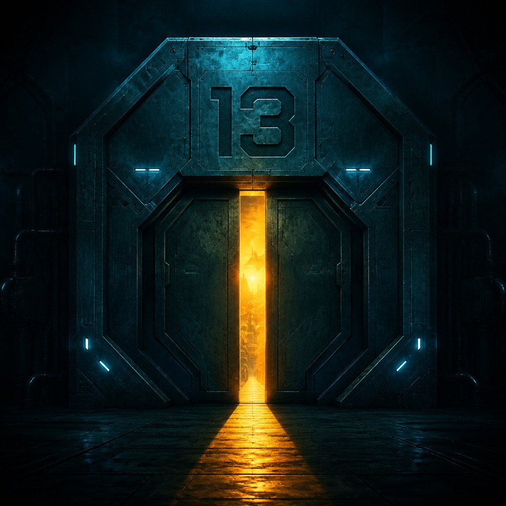

Игра бесплатная?
Да. В версии 1.0 нет рекламы и встроенных покупок. История и интерфейс — на русском языке.

ПОРОГ 13Связь со станцией
Возникла ошибка или вопрос по прохождению? Напишите разработчику.
Написать в поддержку ↗businessjuss@gmail.com
Это поможет разобраться в проблеме.
Модель iPhone или iPad, версию системы и игры, что произошло и после какого действия. Если проблема связана со сценой, приложите её текст или снимок экрана.
Не присылайте пароли или платёжные данные. Разработчик: Vladimir Mitryukov.
Да. В версии 1.0 нет рекламы и встроенных покупок. История и интерфейс — на русском языке.
Основная игра работает офлайн: текст, иллюстрации, музыка и эффекты входят в приложение. Интернет нужен для синхронизации профиля через iCloud.
Игра сохраняется автоматически. Нажмите кнопку продолжения в главном меню. Текущая сцена хранится на этом устройстве; через iCloud могут переноситься открытые концовки и другие отметки профиля.
Проверьте громкость устройства и беззвучный режим, затем громкость музыки и эффектов в игре. В настройках доступны звуковые примеры. Звуки нажатий включаются отдельно.
В настройках игры включите вибрацию и нажмите «Проверить вибрацию». На поддерживаемом iPhone вы почувствуете два коротких импульса. Проверьте также системные настройки вибрации.
Да. В настройках выберите размер текста и скорость появления. Режим «Сразу целиком» отключает постепенный вывод.
В некоторых вступительных сценах герой ещё не открыл глаза. Это часть истории. Текст и переход к следующей реплике должны оставаться доступны.
iPhone и iPad с iOS или iPadOS 17.0 и новее. Тактильный отклик доступен только на устройствах с поддержкой этой функции.
Сохранения остаются на устройстве, а игровой профиль может синхронизироваться через личный iCloud. Подробности — в политике конфиденциальности.
Прочитать политику →